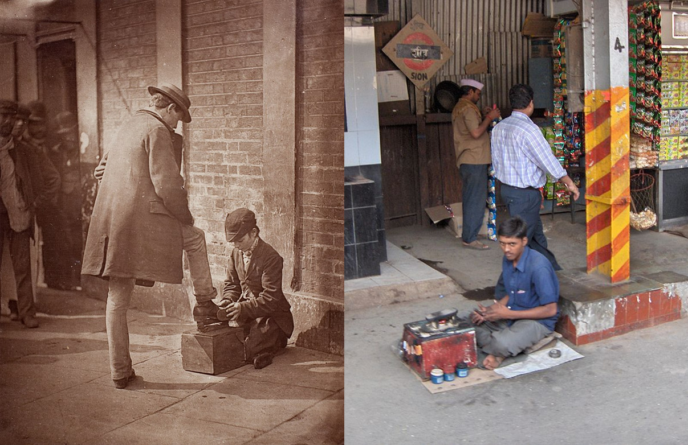
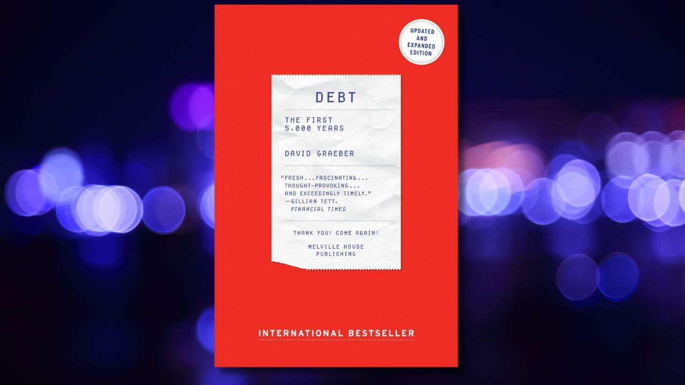
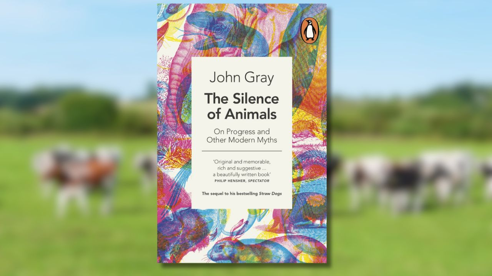

The stories that keep you up at night are all made up
Exploring the mythology of a mythless world
Did the ancient Greeks really believe all those myths? We find it hard to imagine that people trusted the Oracle of Delphi with important decisions or prayed to such a horny and mischievous god as Zeus! And yet, 2000 years later, myths are still with us.
Meritocracy
‘Success doesn’t depend on being born into wealth or privilege. It depends on effort and merit.’ Or so the former US president Barack Obama said. And yet, meritocracy is little more than a myth, one that ends up making life worse for most of us. The Wikipedia article on shoeshiners perfectly illustrates why. You’ve seen this in movies set a century ago: a poor boy on the street will clean and wax someone’s shoes for a coin. The article reads:
‘While the role is denigrated in much of Western civilization, shining shoes is an important source of income for many children and families throughout the world. Some shoeshiners offer extra services, such as shoe repairs and general tailoring. Some well-known people started their working life as shoeshiners, including singers and presidents.’
Like any good lie, this one has a little bit of truth in it. Just like a few shoeshiners have become successful, there is a teeny tiny chance you may also make it out of the hood. But the truth is that, like all the other millions of people trapped in bullshit jobs, you probably won’t strike gold. If you aren’t a nepo baby, then you’re always closer to cleaning the shoes of successful people than dining with them.
The biographies of those few people who went from rags to riches serve as more than feel-good stories. They are a useful façade to keep the myth alive, the idea that the system is fair. (The Market Exit YouTube channel has an excellent video on the topic.) It is no mistake that you’ll often hear oligarchs claiming to be self-made when they actually received millions from their families. And let’s not forget that, if success means climbing to the top in terms of wealth, that’s usually done by treating the humans around you quite badly and exploiting those you do not see – and that is no way to treat each other.

We do not live in a meritocracy but we want to. Even more important, we do not have to give up on this idea. We can still aim for it, while acknowledging we are far from there at this moment in time. As philosopher Catia Faria once wrote in a book about animal ethics, ‘We should be wary of cosy moral beliefs. […] If our beliefs are wrong, we should change them. If things are bad, we should act accordingly.’

Left: Shoeshiner at work in 1877. Right: Contemporary boot polisher. Source: Wikipedia.
Barter
While the previous example has ‘an element of truth,’ this one is a purely made-up story – and it sits at the foundation of modern economics. Now, I’ll be the first to admit that I love myself a good story, but when it controls so much of our lives, it is worth asking if that’s the best story we can tell…
We know even how this myth came to be: it is a hypothetical story written by Adam Smith that has been repeated in economics textbooks over and over. It goes something like this: ‘Once upon a time, there was barter. It was difficult. So people invented money. Then came the development of banking and credit.' The issue? This is not a historical fact; there was no pure ancestral barter economy and money did not emerge from that.
‘So what?’ will an unusually impatient reader think. ‘What if that was just a thought-experiment used by Smith to give his readers a nice linear story instead of actually looking at the historical evidence?’ Well, if this was just some detail of a fantasy anime, that wouldn’t be a big deal. But this made-up story has become so prevalent that it shadows the diverse and fascinating history of how humans of the past organised their economies. It also made it so that most people nowadays are simply not able to imagine an alternative to money. I don’t know about you, but I wouldn’t want a myth to take so much away from me.
It is simply fascinating how the ‘main economic institution among the Iroquois nations were longhouses where most goods were stockpiled and then allocated by women’s councils, and no one ever traded’ goods in the imaginary barter fashion. Similarly, the ancient Mesopotamian economy functioned based on credit – what we now call virtual money. But enough examples. The point is not to find some wise old ladies and give them control over the global economy (although, looking at the way things are going, that may not sound like such a bad idea). The point is to remind us that history is much more interesting than we usually imagine and that the best thing about stories or myths is that they can be changed when needed.

Short barter story and Iroquois councils quote are taken from Graeber, David. “Debt, the first 5000 years,” Belville House, London, 2014. Do check out his work – you’ll thank yourself.
ProgressTM
Questioning the next topic is almost taboo. This is the myth of history as a linear progress, from inferior societies to the one of today. Sure, there may have been some setbacks on the way, but we now live in the best of times; life for humans has never been as good as today, or so the story goes. I’ve met even struggling people who promote this idea. And, who knows, perhaps life is great for everyone else but them. To be clear, out of the three myths explored here, this one has the most truth in it. That is why I want to ask just what exactly makes this the best time in history?
The good. Probably all societies across history taught of themselves to be the coolest (or, at least, following on the footsteps of great ancestors). Clearly though, in matters of technology, science, medicine and entertainment we are at the most advanced point in history. But what about the things that really matter, like happiness, meaning, love, art, orgasms, morals, community?
The bad. Some may rush to say that technology by itself makes our lives better. Yet, this is not a given – while technology stacks up, morality is not linear; it can easily be lost. One obvious example: we kill around 100 billion farm animals each year. The scale of waste and brutality in this industry should by itself make us question the notion that technological progress is automatically followed by moral progress.
How about an area where the numbers are in our favour? As the story goes, ‘most people in the past used to be dirt poor, while the rate of poverty has never been as low as in our times.' In our times, just about 1 billion people live in extreme poverty (1 in 8) and just 2.3 billion face food insecurity (2 in 8). Some economists would go as far as saying that, overall, half of the human population tackles some forms of poverty. (The numbers come from the World Bank. For more on the matter, Jason Hickel’s book The Divide is a thought-provoking start. Or, you could check out his short article here – nobody’s gonna know.)
Now, even if poverty has never been so low, relative to population size, the comparison is a bit unfair, isn’t it? We have refrigeration and modern agriculture; people in the past didn’t. Sure, we may be glad that in theory we can feed everyone, as opposed to a mediaeval farmer who had to pray for rain, but in practice, we often end up doing little more than sending thoughts and prayers too. In other words, we have to hold ourselves to higher standards!
Sadly, other examples abound: we could easily implement the 4-hour working day but we choose not to; the internet was once synonymous with freedom, yet today it is increasingly monopolized by a few corporations and dictators; there is no sign that new technologies will stop being used for war. Laugh as you might at the medieval peasants who didn’t have Netflix, phones and football, but a well-handled pitchfork was enough to take down a knight. Try taking down a tank or fully armed police forces with the basic items you own, if you own any…
The murky. In many ways, we live in times of unprecedented advance, but in others, we reached peak levels of backwardness. Simply put, technology, science and medicine have advanced to never-before-seen heights, but just like in the times of Tolstoy (the prolific Russian author, pacifist and vegan – can you imagine?), for the vast majority of people, this progress has translated to more work, less freedom and a replacement of traditional sources of meaning and community with cheap entertainment.
Like with the previous two, my biggest issue with this half-myth is the way it limits us. By thinking of ourself as the cherry on the cake of human history, we too easily disregard past experience. Past societies were neither extremely dumb, lazy and hopelessly violent, nor did they have some impenetrable wisdom into the workings of the universe; they were made by humans and they were different from what we have today, in good and bad ways. A few positive examples: medieval peasants used to have more free time than we do today; many Native American societies found ways to solve inequality without sacrificing the individual uniqueness of each member; we know of large-scale ancient cultures that were also largely conflict-free.
Your ad-blocker ate the form? Just click here to subscribe!
It is too often that the myth of peak progress sounds like, ‘stop looking at the things that don’t go well; remember how you live in the best times ever, unlike a medieval peasant in the muck’. And in a time where so many of our freedoms are more virtual than real, exploring past societies may inspire us to organise the present in fairer ways. It is as simple as this: in some ways we have reached peak progress (medicine, entertainment, technology); in others we are at the lowest point in history (animal exploitation). In other areas, like morals, it is an open question whether progress is possible at the level of humanity as a whole or only at a personal one.
From a serious academic point of view, this idea is at most funny. History is not a story of linear progress. Just like the humans that create them, civilisations come and go, some barely leaving any trace. Be this as it may, the point is that we want to live in the best of times. But if a story is used as a convenient way to cover up uncomfortable events, we shouldn’t pretend it is anything other than that, a story we like and helps us forget about the blame.

John Gray is the philosopher who wrestles with the myth of progress in the most entertaining way. And that’s because this myth of progress is just as flashy, comforting and real as wrestling is. Check out: Gray, John. The Silence of Animals. On Progress and Other Modern Myths. Penguin, 2014.
Instead of conclusion: The future is now
Not all the stories that animate our societies are false or just crowd-control sound bites. For example, contemporary medicine is nothing short of a miracle, there has never been so much wealth as today and lasting peace was achieved in Western Europe. All these are true. But there are too few people who enjoy all the good things at once. Most places on Earth, much as they’d like to be like Norway, are simply not allowed to. Through corruption, economic exploitation or outright invasion (if you happen to neighbour Russia) so many countries are being held down by the big powers and local dictators.
Perhaps the biggest take-away from exploring such myths is the awareness that we can change the stories we tell ourselves or, at least, improve on them. Unfortunately, it is even more difficult for us to do so than it was for the ancient Greeks. Even a four years old child can see through the stories about Zeus but we love to shroud myths in pseudo-science nowadays, which takes a bit more time to combat.
◊ ◊ ◊

Petrică Nițoaia is a former shepherd, passionate about philosophy and animal ethics. He writes mainly on the ethics of food production, wild animal suffering, human rights and philosophical pessimism. He finds philosophy and history not only fascinating but also fun and useful for making the world a more joyful and fair place for all.
Petrică Nițoaia on Daily Philosophy: